Inhalation anaesthesia - vaporisers
Most inhalation anaesthetic drugs are liquids at room temperature and must be vaporised before giving to the animal. Modern drugs are very potent - too much will kill the animal. This means that you must have a good idea of how much the animal is getting. There are three main strategies to acheive this:
- use an expensive precision vaporiser which gives out exactly what it says
- use a vaporiser which is not (usually) capable of giving high concentrations
- use expensive gas monitoring equipment to measure how much the animal is actually getting
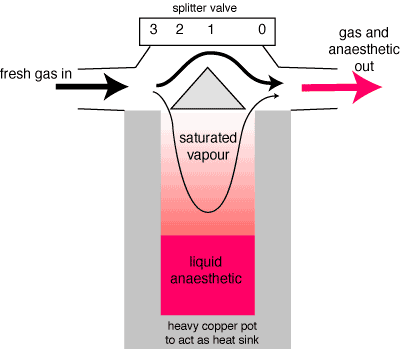
How most vaporisers work.
There are two main types of vaporiser: plenum (precision, high resistance) vaporisers are more accurate but are not suitable for animals to breathe through, drawover (low resistance) vaporisers are used in - circuit. Desflurane vaporisers (rarely used in veterinary anaesthesia) work on a different principle, but function as plenum vaporisers. In veterinary practice, drawover vaporisers are almost exclusively used in-circle, but most of them are designed for semi-closed drawover circuits (used in human military / disaster anaesthesia).
Plenum (high resistance vaporisers)
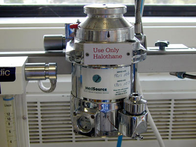Fluotec Mark 3 - commonest in veterinary practice, but superseded in human anaesthesia.
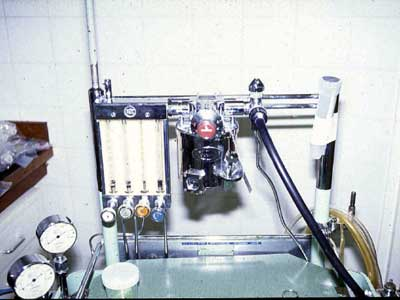Fluotec Mark 2 - an early semi-precision vaporiser. Beware: at low flows it gives out more than it says on the dial!
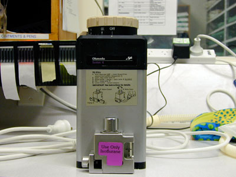Tec 4 - common in human hospitals.
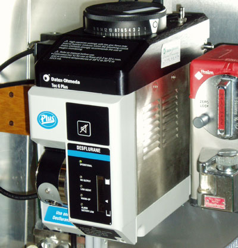Tec 6 Plus - electronic vaporiser for desflurane.

? - for sevoflurane with a Tec 3 for isoflurane.
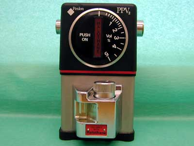Penlon PPV - a modern precision vaporiser.
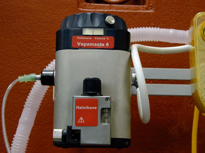M&IE Vapamasta 6 - a modern precision vaporiser.

Boyle's bottle - very common many years ago - avoid.
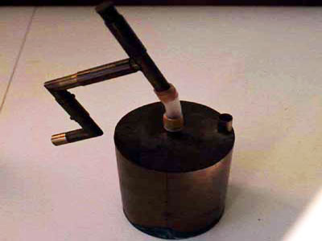Flagg's can - the original plenum vaporiser.
Drawover (low resistance vaporisers)
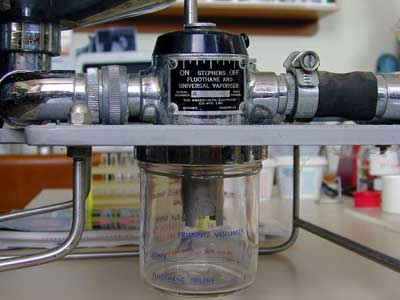Stephens vaporiser in a large animal circle. Beware: never use with the shroud down with halothane!
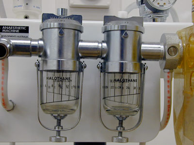Goldman vaporisers - originally for special dental circuits, here in-circle on a Komesaroff machine.

Oxford Miniature Vaporiser - a semi-precision in-circle / drawover vaporiser. Designed to work with a wide range of different drugs. Accurate enough to use in or out of circle.
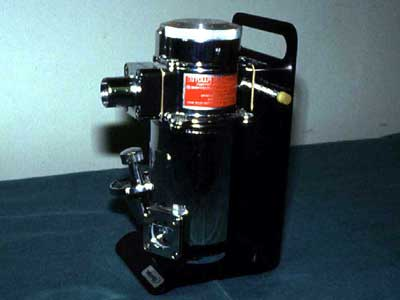Fluotec Mk 2 Drawover - a semi-precision in-circle / drawover vaporiser. Rare.